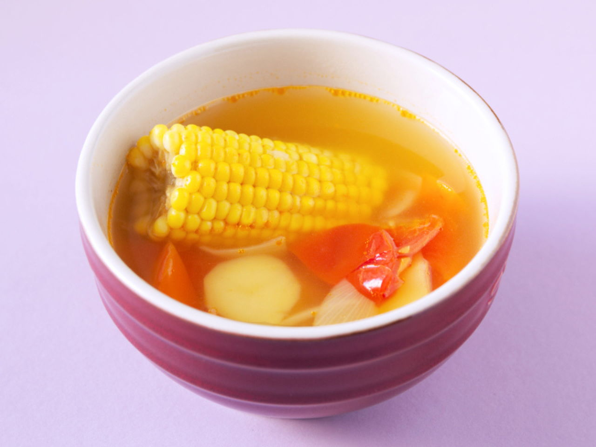

Back to Main Page
ABC Vegetable Soup

Description
ABC soup is a nourishing soup cooked with potatoes,
carrots, tomatoes, onions and pork ribs/bones or chicken.
It could also be easily turned into a vegetarian soup
by omitting the meat.
Super simple to make.
Ingredients
Serves: 4 servings.
- 1 tomatoes
- 1 potatoes
- 1 yellow onions
- 1 carrots
- 1/2 corn
- 2 chicken drumstick(s)
- 2 1/2 l water
- salt and pepper to taste
Steps:
If you have a slow cooker, definitely use one.
- Score the skin of the tomato and potato.
Put them into a pot of boiling water.
After one minute, put them into a bowl of cold water.
This will "shock" them and the skin would then be easily removed.
Otherwise, using a spoon would help too.
- Cut all vegetables into chunks or slices, according to your preference.
Optionally, remove the skin of the drumstick.
- Put all ingredients into a pot of boiling water.
Then, let it simmer at low heat for 2-3 hours or
for a minimum of 1.5 hours.
Add salt and pepper to taste.